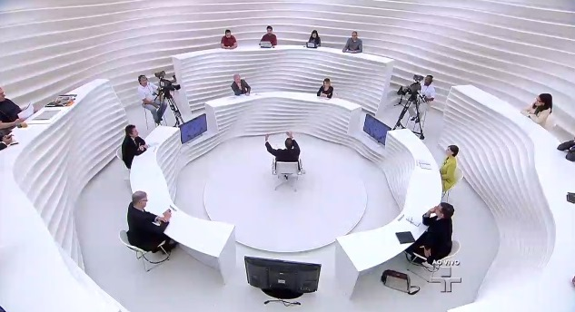

Em ciências humanas, as atividades que eu mais gostei foram as seguintes:
1- Infográfico: A Queda do Céu
Nessa atividade, nós produzimos um infográfico com base ao filme que nós assitimos chamado: A Queda do Céu.
2- Simulação do debate da ONU
Agora para o final do ano, nós fizemos um pequeno debate sobre os refugiados e a saúde mundial, foi uma atividade bem interessante, pois para conseguirmos argumentar sobre o tema, tinhamos que saber o que estavamos falando, então foi um estudo meio que indireto.
3- Roda-viva com imperadores

Por ultimo, o nosso debate estilo roda viva com alguns imperadores antigos, foram descutidos várias decisões tomadas e se nós mudariamos elas ou não. (Eu não tenho foto, infelizmente)